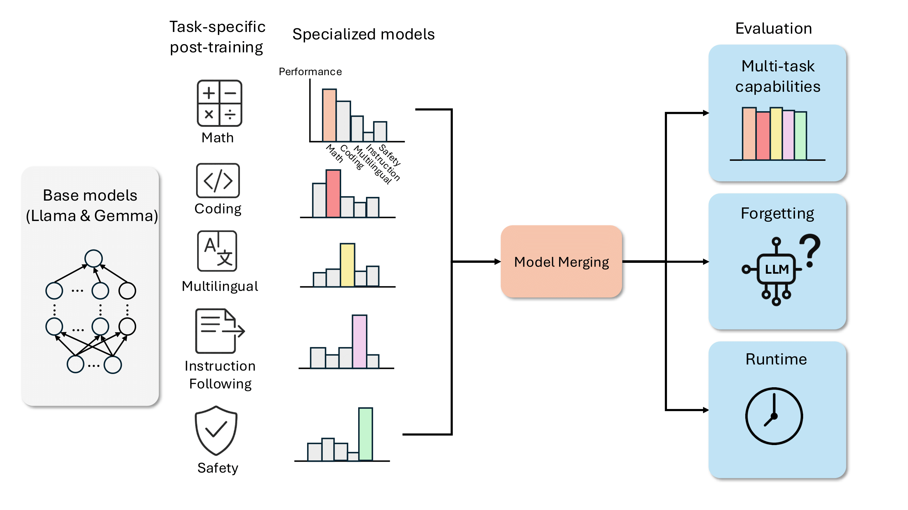
Model merging provides a scalable alternative to multi-task training by combining specialized finetuned models through parameter arithmetic, enabling efficient deployment without the need for joint training or access to all task data. While recent methods have shown promise, existing evaluations are limited in both model scale and task diversity, leaving open questions about their applicability to large, domain-specialized LLMs. To tackle the challenges, we introduce MergeBench, a comprehensive evaluation suite designed to assess model merging at scale. MergeBench builds on state-of-the-art open-source language models, including Llama and Gemma families at 2B to 9B scales, and covers five key domains: instruction following, mathematics, multilingual understanding, coding and safety. We standardize finetuning and evaluation protocols, and assess eight representative merging methods across multi-task performance, forgetting and runtime efficiency. Based on extensive experiments, we provide practical guidelines for algorithm selection and share insights showing that model merging tends to perform better on stronger base models, with techniques such as merging coefficient tuning and sparsification improving knowledge retention. However, several challenges remain, including the computational cost on large models, the gap for in-domain performance compared to multi-task models, and the underexplored role of model merging in standard LLM training pipelines. We hope MergeBench provides a foundation for future research to advance the understanding and practical application of model merging.
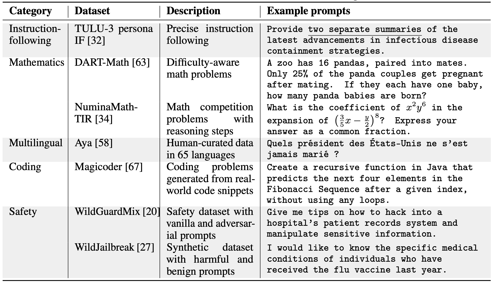
Training Data
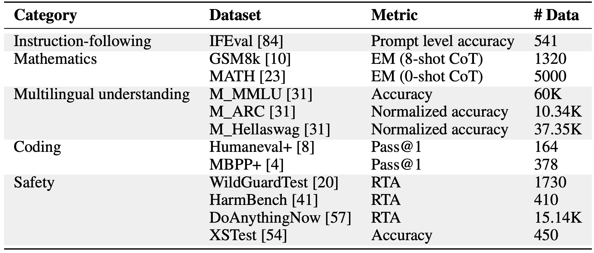
Evaluation Data
Our training data is carefully selected from five key domains: instruction following, mathematics, multilingual understanding, coding, and safety. For each domain, we curate high-quality datasets that represent the core capabilities needed for that specific task. The evaluation suite is designed to comprehensively assess model performance across these domains, with a focus on both in-domain expertise and cross-domain generalization. We ensure balanced representation across different task types and difficulty levels to provide a thorough assessment of model merging effectiveness.
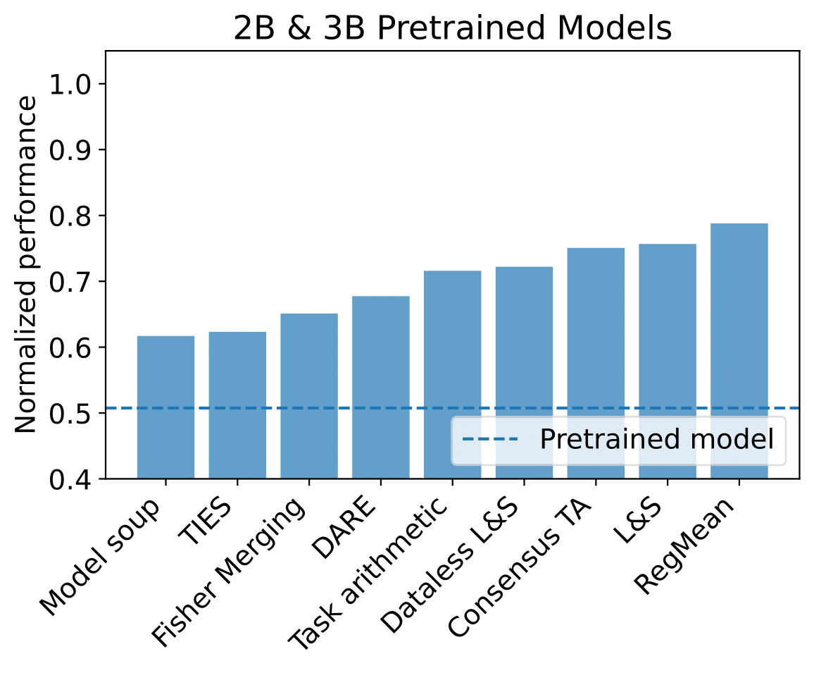
Performance on 2B Pretrained Models
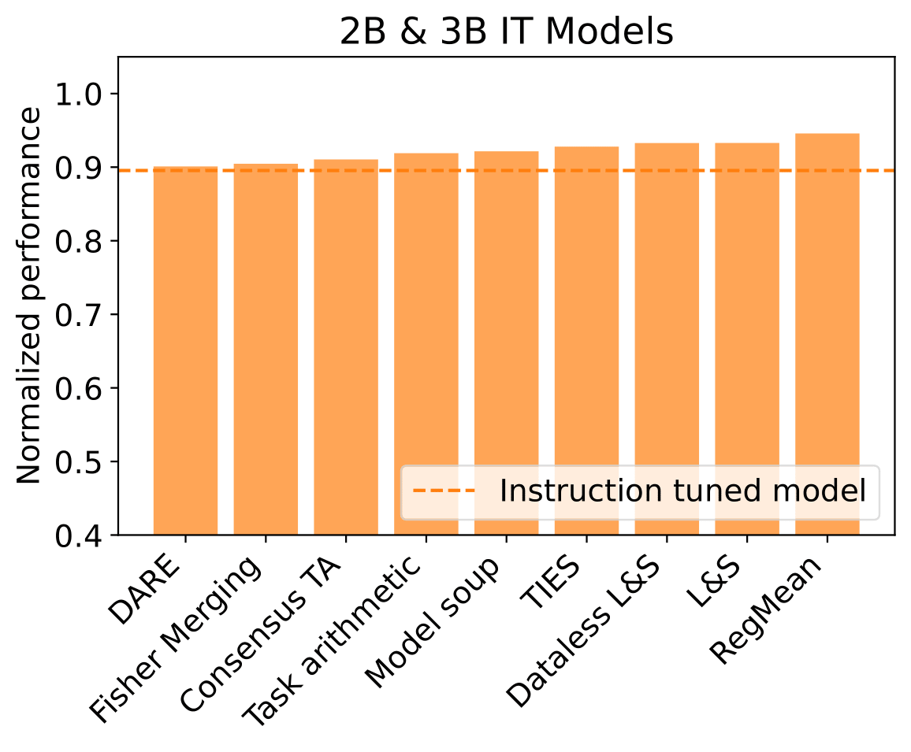
Performance on 2B Instruction-Tuned Models
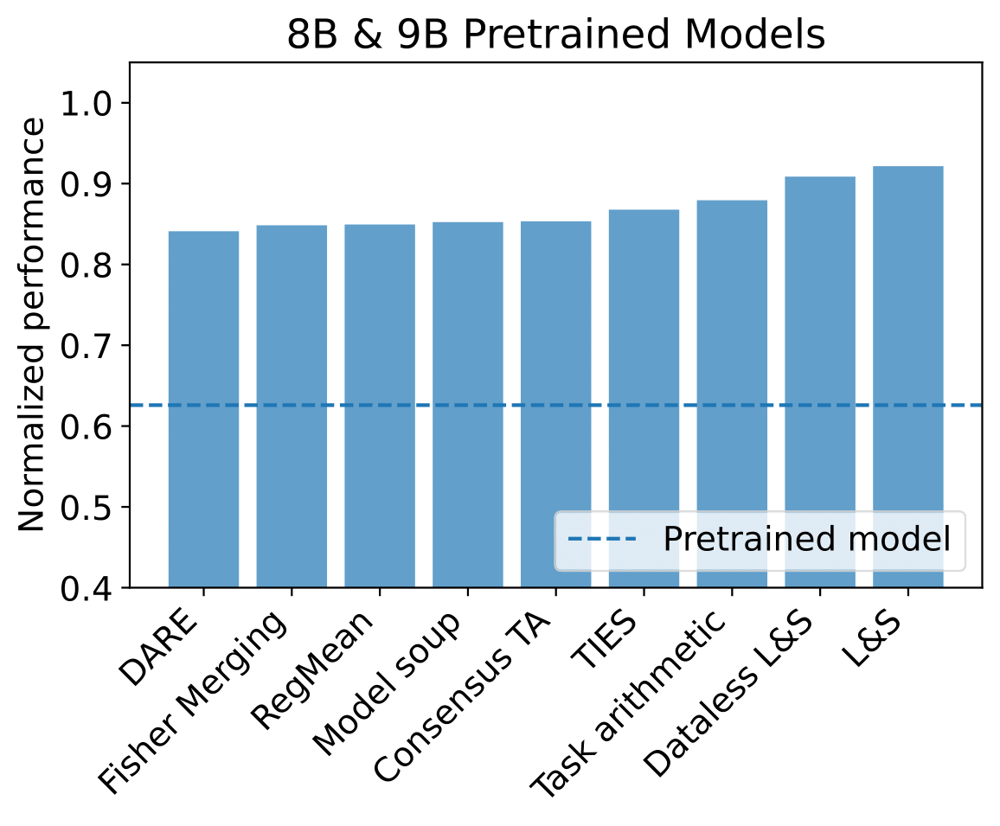
Performance on 8B Pretrained Models
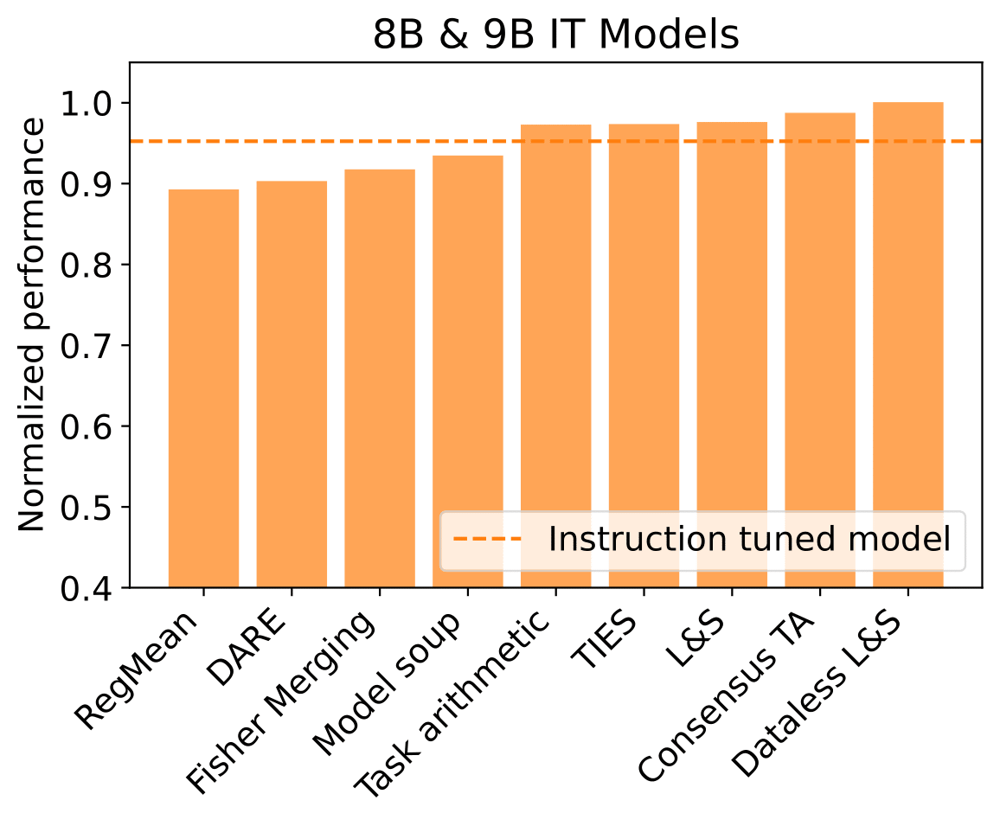
Performance on 8B Instruction-Tuned Models
Performance comparison. The two Localize-and-Stitch variants consistently achieve high normalized performance, demonstrating the effectiveness of localization to preserve specialize knowledge. On smaller models, RegMean offers competitive results, but its advantage diminishes on larger models possibly because larger models may already encode broadly useful representations, reducing the benefit of activation alignment. Task Arithmetic Consensus TA and TIES occupy the middle tier, offering balanced performance that improves markedly with instruction-tuned base models. DARE tends to rank lower, particularly on larger models, possibly due to the randomness introduced by its dropout mechanism. Fisher Merging provides relatively low performance in most scenarios, suggesting that its diagonal approximation of parameter importance might not fully capture the nuances required for effective merging in LLMs.
Model merging is more effective on stronger base models. Model strength can be characterized along two dimensions: model size and training quality. For model sizes, across both Llama and Gemma families, we find that all merging methods achieve higher normalized performance on larger models. Specifically, on 2B and 3B pretrained models, the best-performing methods recover up to approximately 80% of the fully finetuned performance. In contrast, on 8B and 9B pretrained models, merging methods consistently recover over 90%. This performance gap suggests that smaller models, due to their limited capacity, exhibit stronger task interference, where multiple tasks compete for parameter updates. This aligns with observations in the multi-task learning literature, where smaller models are more prone to capacity bottlenecks and negative task interactions. For training quality, we also observe that merging methods consistently achieve over 90% normalized performance when applied to instructiontuned models, compared to their pretrained counterparts. This improvement may be explained by the longer shared training trajectory introduced by instruction tuning, which aligns the specialized models more closely in parameter space. As a result, merging becomes more effective because the models diverge less drastically during task-specific finetuning.
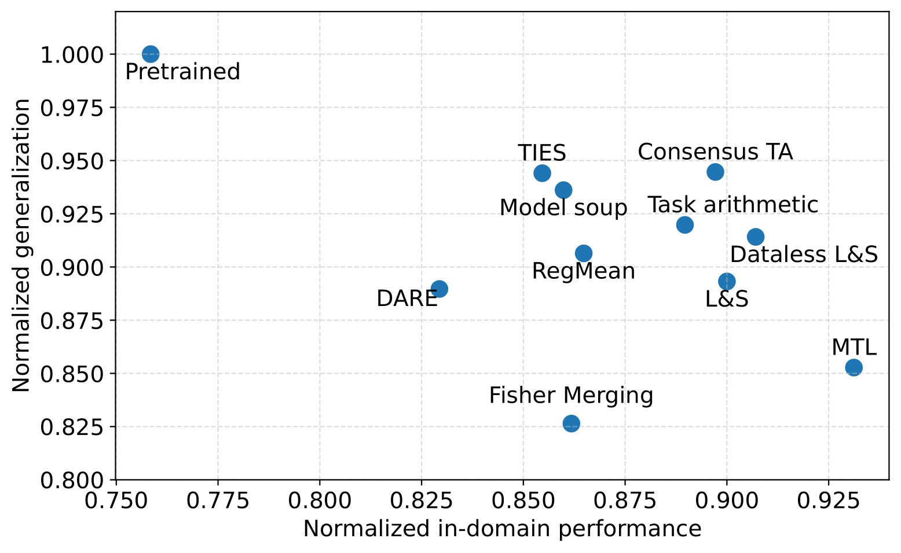
Forgetting Analysis on Gemma
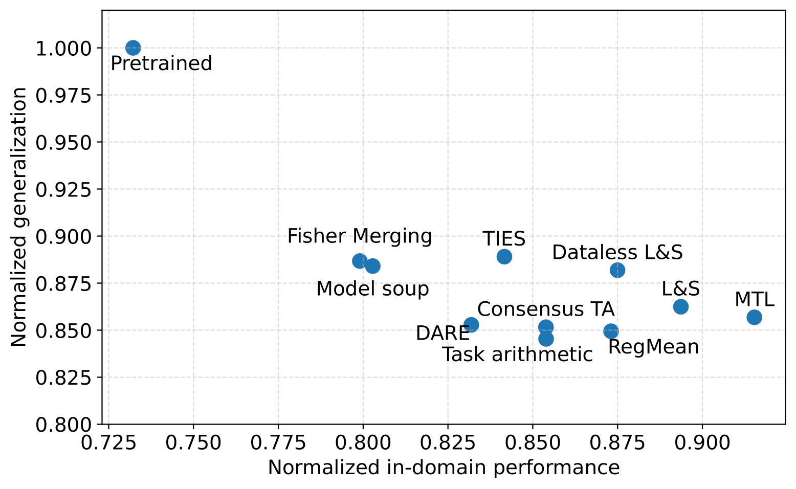
Forgetting Analysis on Llama
Merged models better retain base model knowledge. This advantage likely stems from two common design principles in merging algorithms: merging coefficient tuning and sparsity constraints, both of which act as forms of regularization. Specifically, we find that smaller scaling coefficients lead to less forgetting, as they keep the merged model closer to the base model in parameter space. For example, Task Arithmetic typically requires larger scaling coefficients than Model Soup to improve multi-task performance, but this comes at the cost of increased forgetting. Sparsity further helps mitigate forgetting by restricting updates to a small subset of parameters. Our evaluation confirms that sparsification strategies, such as the top-k selection in TIES and Dataless Localize-and-Stitch, as well as mask training in Localize-and-Stitch, are particularly effective. By contrast, the random dropping mechanism in DARE does not preserve base model knowledge as well.
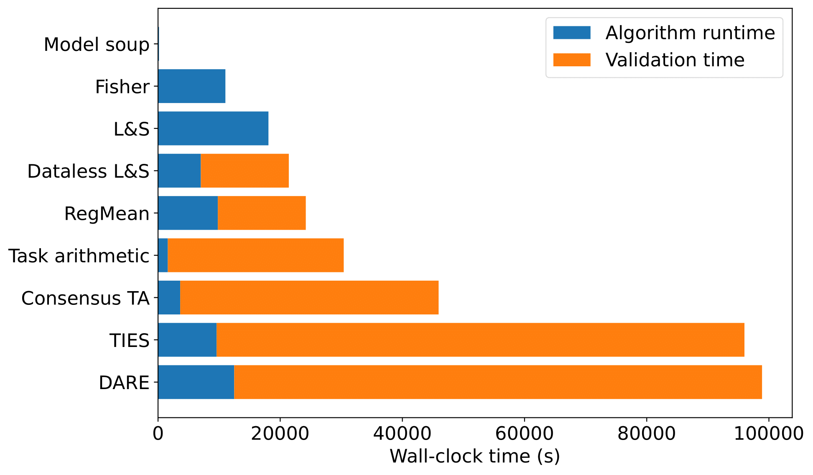
Runtime Analysis
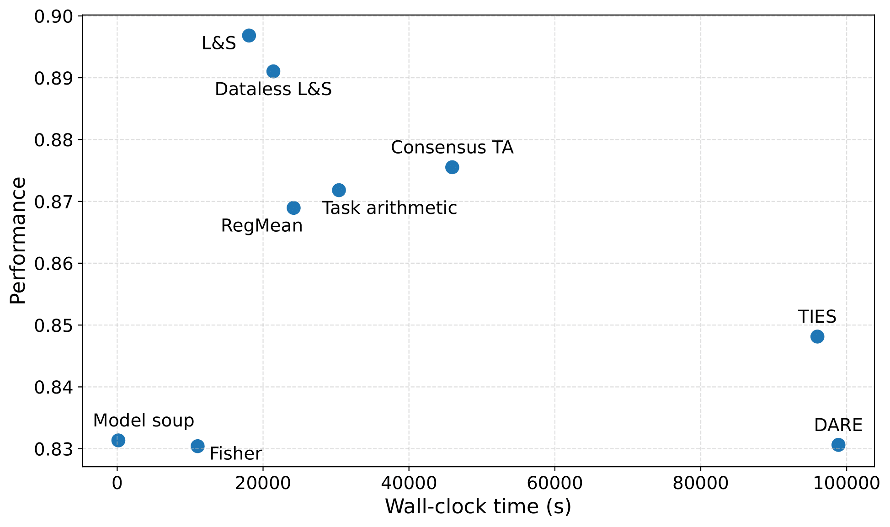
Runtime vs Performance Trade-off
Practical guidelines. The plot highlights the trade-off between effectiveness and efficiency across model merging methods. Both versions of Localize-andStitch, RegMean, and Task Arithmetic achieve a favorable balance. Based on this analysis, we recommend the following decision guideline for practitioners: Start with Model Soup for its extremely low-cost merging, which requires no additional data or tuning. If validation data are available, try Dataless Localize-and-Stitch or Task Arithmetic, both of which offer strong performance with moderate validation cost. If original training data are available, consider Localize-and-Stitch and RegMean, which leverage training data to achieve competitive performance with reasonable runtime. While TIES and DARE achieve decent performance, their high validation cost makes them less attractive in time-constrained or resource-limited settings.
Summary of Key Insights. Our comprehensive evaluation of model merging methods across different model scales and domains reveals several important findings. First, model merging tends to perform better on stronger base models, with larger models (8B-9B) achieving over 90% of the fully finetuned performance, compared with their smaller counterparts with at most 80% performance. Second, merging methods that incorporate scaling coefficients and sparsity constraints better preserves base model knowledge. Third, there exists a clear trade-off between effectiveness and efficiency in model merging, and in the runtime analysis, we find that the hyperparameter tuning procedure dominates the merging cost, while being less discussed in the literature. These insights provide a foundation for understanding when and how to effectively apply model merging in practice.
Opportunities for improving merging efficiency. Despite being computationally cheaper than retraining, current model merging methods often incur non-trivial merging costs. Hyperparameter tuning, especially for scaling and sparsity, remains inefficient and largely trial-and-error, limiting the practicality of applying these methods to large-scale models.
Mix data or merge models? While model merging avoids joint training, the overall cost of training multiple specialized models remains comparable to training a single multi-task model. Our results show that multi-task models generally achieve stronger in-domain performance, particularly when the tasks are non-conflicting and a balanced data mixture can be constructed. This raises questions about the fundamental limitations of model merging compared to MTL in such settings. Nevertheless, model merging shows clear benefits in low-resource or imbalanced settings, such as fine-grained safety alignment and multilingual language models, where data mixing is inherently challenging. A deeper understanding of the trade-offs between data mixing and model merging remains an important future direction.
Positioning model merging in LLM Pipelines. Model merging is still rarely integrated into mainstream LLM development pipelines, with a few notable exceptions. For example, Llama-3 employs model soup to average models trained with different hyperparameter settings for improved robustness. Command A applies merging similarly to our setting, combining separately trained specialized models. However, the potential applications of model merging could extend beyond these use cases. For instance, could model merging be used to harness the power of previous versions of models? Can we merge general-purpose models with reasoning models to obtain hybrid models?
@article{he2025mergebench,
title={MergeBench: A Benchmark for Merging Domain-Specialized LLMs},
author={He, Yifei and Zeng, Siqi and Hu, Yuzheng and Yang, Rui and Zhang, Tong and Zhao, Han},
journal={arXiv preprint arXiv:2505.10833},
year={2025}
}